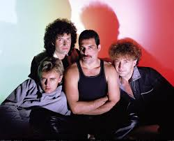

|
 |
 |
 | |
 |
| TITULO | LETRA |
| Killer Queen |
She keeps Moët et Chandon In her pretty cabinet Let them eat cake, she says Just like Marie Antoinette A built-in remedy For Khrushchev and Kennedy At anytime, an invitation You can't decline Caviar and cigarettes Well-versed in etiquette Extraordinarily nice She's a Killer Queen Gunpowder, gelatine Dynamite with a laser beam Guaranteed to blow your mind Anytime Recommended at the price Insatiable in appetite Wanna try? To avoid complications She never kept the same address In conversation She spoke just like a baroness Met a man from China Went down to Geisha Minah Then again incidentally If you're that way inclined Perfume came naturally from Paris (naturally) For cars, she couldn't care less Fastidious and precise She's a Killer Queen Gunpowder, gelatine Dynamite with a laser beam Guaranteed to blow your mind Anytime Drop of a hat, she's as willing as Playful as a pussycat Then momentarily out of action Temporarily out of gas To absolutely drive you wild, wild She's out to get you She's a Killer Queen Gunpowder, gelatine Dynamite with a laser beam Guaranteed to blow your mind Anytime Recommended at the price Insatiable in appetite Wanna try? You wanna try! |
| Fat Bottomed Girls |
Are you gonna take me home tonight? Oh, down beside that red firelight? Oh, you gonna let it all hang out? Fat bottomed girls You make the rockin' world go round Hey, I was just a skinny lad Never knew no good from bad But I knew life before I left my nursery Left alone with big fat Fanny She was such a naughty nanny Hey, big woman, you made a bad boy out of me Hey, hey! I've been singing with my band Across the water, across the land I seen every blue eyed floozy on the way But their beauty and their style Went kind of smooth after a while Take me to them dirty ladies every time Oh, won't you take me home tonight? Oh, down beside that red firelight Oh, and you give it all you got Fat bottomed girls You make the rockin' world go round Fat bottomed girls You make the rockin' world go round Hey, listen here Now your mortgages and homes I got stiffness in the bones Ain't no beauty queens in this locality (I tell you) Oh, but I still get my pleasure Still got my greatest treasure Hey, big woman, you gonna make a big man out of me Now get this Are you gonna take me home tonight? (please) Oh, down beside that red firelight? Oh, you gonna let it all hang out? Fat bottomed girls You make the rockin' world go round Fat bottomed girls You make the rockin' world go round Get on your bikes and ride Oh, yeah Them fat bottomed girls Fat bottomed girls Yeah, yeah, yeah Alright, ride 'em, cowboy Fat bottomed girls Yes, yes |
| Bohemian Rhapsody |
Is this the real life? Is this just fantasy? Caught in a landslide No escape from reality Open your eyes Look up to the skies and see I'm just a poor boy I need no sympathy Because I'm easy come, easy go Little high, little low Anyway the wind blows Doesn't really matter to me To me Mama, just killed a man Put a gun against his head Pulled my trigger, now he's dead Mama, life had just begun But now I've gone and thrown it all away Mama! Ooh! Didn't mean to make you cry If I'm not back again this time tomorrow Carry on, carry on As if nothing really matters Too late, my time has come Sends shivers down my spine Body's aching all the time Goodbye, everybody I've got to go Gotta leave you all behind And face the truth Mama! Ooh! (Anyway the wind blows) I don't wanna die I sometimes wish I'd never been born at all I see a little silhouetto of a man Scaramouche! Scaramouche! Will you do the fandango? Thunderbolt and lightning Very, very frightening me! Galileo! Galileo! Galileo! Galileo! Galileo, Figaro! Magnifico! I'm just a poor boy and nobody loves me (He's just a poor boy from a poor family) (Spare him his life, from this monstrosity) Easy come, easy go Will you let me go? Bismillah! No, we will not let you go! (Let him go!) Bismillah! We will not let you go! (Let him go!) Bismillah! We will not let you go! (Let me go!) Will not let you go! (Let me go!) Never, never let you go! Never, never, never let me go! No, no, no, no, no, no, no! Oh, mamma mia, mamma mia! Mamma mia, let me go! Beelzebub has a devil put aside for me! For me! For me! So you think you can stone me and spit in my eye? So you think you can love me and leave me to die? Oh, baby! Can't do this to me, baby! Just gotta get out Just gotta get right outta here! Oh, yeah! Oh, yeah! Nothing really matters Anyone can see Nothing really matters Nothing really matters to me Anyway the wind blows |
| Radio Ga Ga |
I'd sit alone and watch your light My only friend through teenage nights And everything I had to know I heard it on my radio You gave them all those old time stars Through wars of worlds invaded by Mars You made 'em laugh, you made 'em cry You made us feel like we could fly So don't become some background noise A backdrop for the girls and boys Who just don't know or just don't care And just complain when you're not there You had your time You had the power You've yet to have your finest hour Radio All we hear is radio ga ga Radio goo goo Radio ga ga Radio blah blah Radio, what's new? Radio, someone still loves you We watch the shows, we watch the stars On videos for hours and hours We hardly need to use our ears How music changes through the years Let's hope you never leave, old friend Like all good things, on you we depend So stick around, 'cause we might miss you When we grow tired of all this visual You had your time You had the power You've yet to have your finest hour Radio All we hear is radio ga ga Radio goo goo Radio ga ga All we hear is radio ga ga Radio goo goo Radio ga ga All we hear is radio ga ga Radio blah blah Radio, what's new? Someone still loves you Radio ga ga Radio ga ga Radio ga ga You had your time You had the power You've yet to have your finest hour Radio |
| Somebody To Love |
Can anybody find me somebody to love? Ooh Each morning I get up, I die a little Can barely stand on my feet (Take a look at yourself in the mirror) take a look in the mirror And cry (and cry) Lord, what you're doing to me (yeah, yeah) I have spent all my years in believing you But I just can't get no relief, Lord Somebody (somebody) Ooh, somebody (somebody) Can anybody find me somebody to love? I work hard (he works hard) Everyday of my life I work till I ache my bones At the end (at the end of the day) I take home my hard-earned pay all on my own (yes, on my knees on) I get down (down) on my knees (knees) And I start to pray (praise the Lord) Till the tears run down from my eyes, Lord Somebody (somebody) Ooh, somebody (please) Can anybody find me somebody to love? (He works hard) everyday (everyday) I try, and I try, and I try But everybody wants to put me down, they say I'm goin' crazy They say I got a lot of water in my brain Ah, I got no common sense I got nobody left to believe in (Yeah, yeah, yeah, yeah) Ooh, somebody (somebody) Can anybody find me somebody to love? (Anyone) (Somebody find me someone to love) got no feel, I got no rhythm I just keep losing my beat (you just keep losing and losing) I'm okay, I'm alright (he's alright, he's alright) I ain't gonna face no defeat (yeah, yeah) I just gotta get out of this prison cell Someday I'm gonna be free, Lord Find me somebody to love Find me somebody to love Find me somebody to love Find me somebody to love Find me somebody to love (find me, find me) Find me somebody to love (find me) Find me somebody to love Find me somebody to love-ove-ove (ooh, find me, find me somebody to love) Find me somebody to love (somebody to love) Find me somebody to love Somebody (somebody), somebody (somebody) Somebody (find me), somebody find me somebody to love Can anybody find me somebody to love? Find me somebody to love Find me somebody to love (find me somebody) Find me somebody to love (somebody, somebody, somebody to love) Find me, find me, find me (find me, find me, find me, find me, find me) Find me somebody to love (ooh, somebody to love) Find me somebody to love (ooh, find me, find me, find me somebody to love) Find me somebody to love (anybody, anywhere, anybody find me somebody to love) Find me, find me, find me |